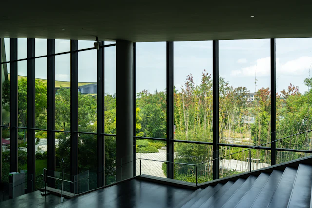
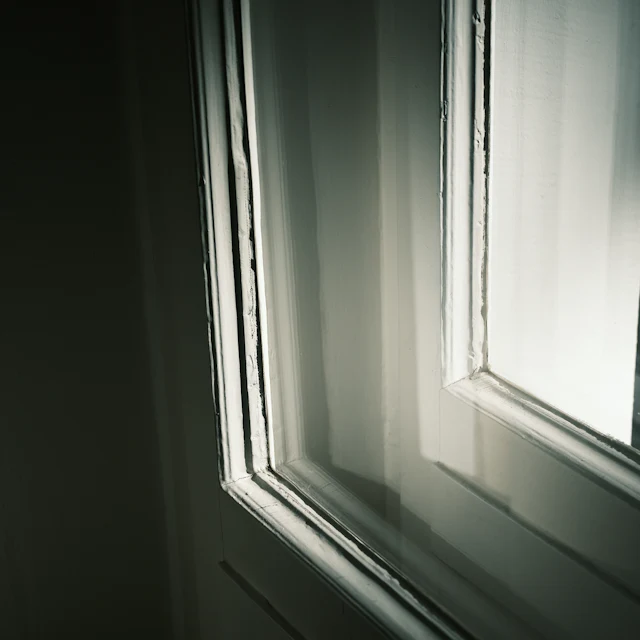

Aliuminio langai
Lumen [DEMO]
Ploni rėmai dideliems stiklams, stiklo sienoms ir slankiojamoms sistemoms.
Rėmo spalva
Antracitas RAL 7016
Techniniai duomenys
Duomenys pavyzdiniai [DEMO]. Tikslias konkrečios sistemos vertes nurodome pasiūlyme.

| Profilio gylis | 75 mm, su terminiu tilteliu |
|---|---|
| Matomas rėmo plotis | nuo 52 mm |
| Stiklo paketas | 3 stiklų |
| Šilumos perdavimas Uw | nuo 1,0 W/(m²K) |
| Didžiausias langas | 4500 × 3000 mm |
| Atidarymas | visi tipai, didelės slankiojamos sistemos |
| Spalvos | Balta RAL 9016, Antracitas RAL 7016, Juoda RAL 9005 |
Atidarymo tipai
- Nevarstoma
- Varstoma ir verčiama, vyriai kairėje
- Varstoma ir verčiama, vyriai dešinėje
- Varstoma, vyriai kairėje
- Varstoma, vyriai dešinėje
- Verčiama
- Slankiojama